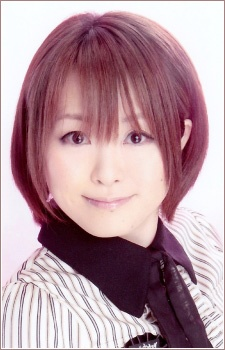

Mari Yamada

Mari Yamada is a Japanese voice actress.
Gender: Female
Birthday: July 26, 1982
Birthplace: Aomori Prefecture, Japan
Character Voiced by Mari Yamada
Mika Masuko
Yes! Pretty Cure 5
Yes! Pretty Cure 5 GoGo!
Go Back to the Y's